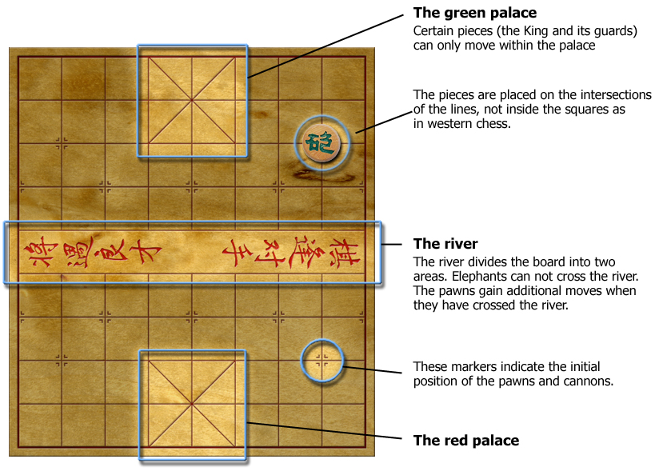
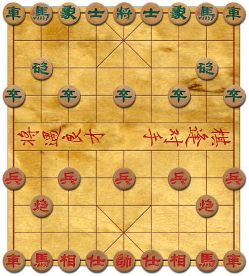

The Board
The Chinese chess board consists of 9 horizontal and 10 vertical positions. The pieces are placed on the intersections of the lines, not inside the squares as in western chess.
In the middle of the board is a horizontal area called the river. The river divides the board into two sides. Certain pieces may never cross the river and are thus confined to their own side of the board. When a pawn crosses the river (i.e. enters the opponent's side of the board), it gains additional moves. See the Pieces & Movement section to see each piece's available movements.
Both sides of the board contain an area called the palace. The palace consists of 9 positions and is marked with a big X. The king and its two guards may only move within the palace.
The picture below gives an overview of the board.

Opening Situation
The pieces are initially placed like this:
